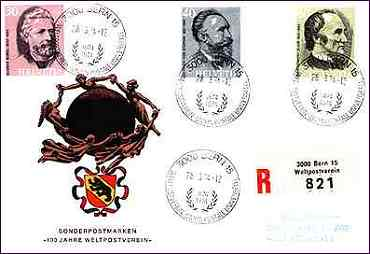
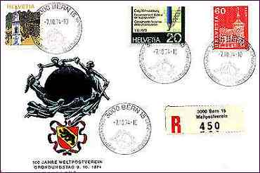
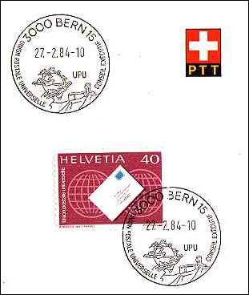
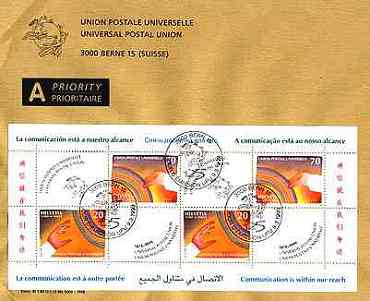
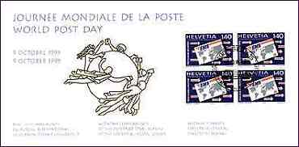
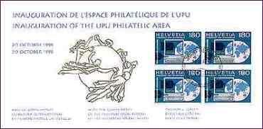
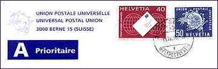
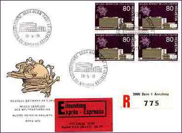
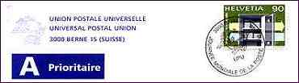

The UPU issued its first stamps in 1957. Between 1957 and 1995 it issued only 16 different stamps, the second issue from 1960 being still in use. The stamps have the inscriptions: Helvetia and Union postale universelle and may be used for the correspondence only by the officials working for the UPU in Bern. The UPU doesn't possess an own postal office and use the Swiss postal office 3000 Bern 15.
This page displays some postal material issued by or related to the Universal Postal Union; it was taken from the Webmaster's collection. Please look below for some explanations.
|
 |
 |
Top - down and from left
to right:
1. Swiss issue. Centenary of the UPU, displaying the portraits of
its founders. Cancelled on the issue day, 3/28/1974 at 3000 Bern 15.
2. Swiss stamps. Cancelled the 10/7/74 at 3000 Bern 15. On the cancel:
Conseil consultatif des etudes postales (Advisory Council for Postal Studies).
|
 |
 |
3. UPU stamp, issued 1976. Cancelled the 2/27/84 at 3000 Bern 15. On the
cancel: Conseil exécutif (Executive Council).
4. 125th
anniversary of the UPU. The first UPU's Miniature Sheet, with First Day
Cancels (3/9/1999), on an official UPU cover (detail). The sheet with FD
cancels on it was not obtainable from the Swiss Postal Service.
|
 |
 |
5. UPU stamps. World Post Day. Cancelled the 10/9/95 at 3000 Bern 15. Text:
With the compliments of the International Bureau of the Universal Postal Union.
6. UPU stamps. Inauguration of the UPU Philatelic Area. Cancelled the
10/20/98 at 3000 Bern 15. Text: With the compliments of the International Bureau of the
Universal Postal Union.
|
 |
 |
|
 |
|
7. UPU stamps. 40c issued in 1976, 50c issued in 1960. Cancelled the
10/15/98. Cancel with the German inscription Weltpostverein (Universal Postal Union). Background: Engraving by Karl Bickel, Zürich, Switzerland. Sculpture by René de St. Marceaux, Paris, France. Link: The Universal Postal Union
|